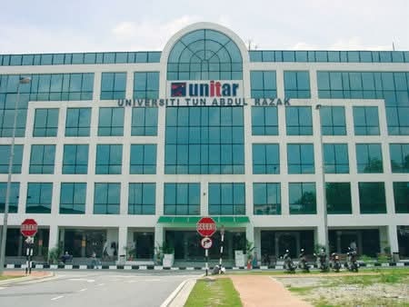
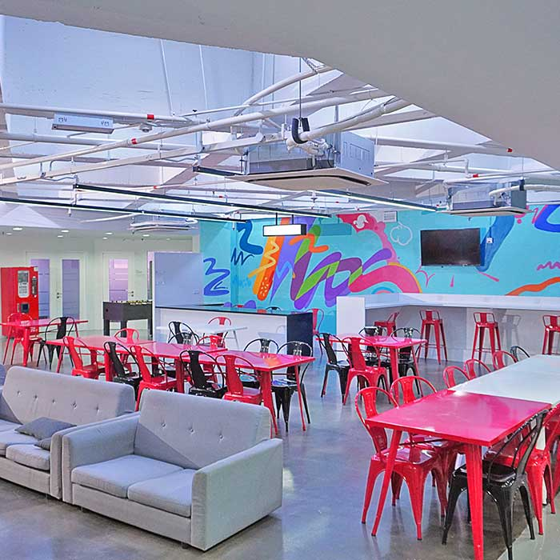
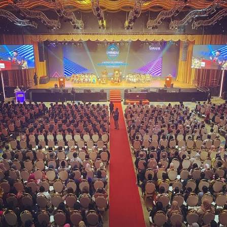
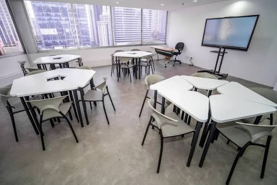
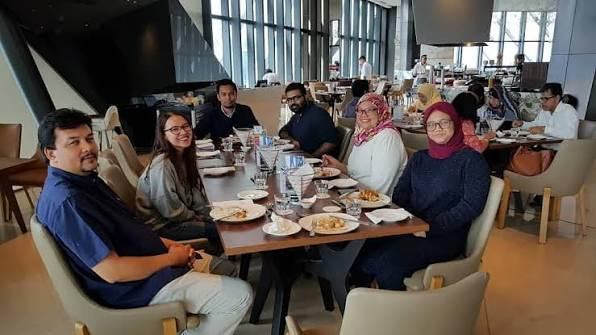

UNIRAZAK is one of Malaysia's premier private universities, named after the nation's second Prime Minister. It is famous for being a "Boutique University" that offers specialized, high-quality education in government, business, and education.
Home to the prestigious **Tun Abdul Razak School of Government (TARSOG)** and the **Bank Rakyat School of Business**, UNIRAZAK is the top choice for students aiming for careers in public policy, leadership, and corporate entrepreneurship.





UNIRAZAK is strategically located at Jalan Tangsi, right in the heart of Kuala Lumpur's heritage and administrative district. It is surrounded by landmarks like Bank Negara and Dataran Merdeka, providing an inspiring atmosphere for students.
195A, Jalan Tun Razak, 50400 Kuala Lumpur (and Jalan Tangsi)
Near LRT Bandaraya & KTM Bank Negara
Close to Govt Ministries & HQs
Near SOGO & Dataran Merdeka
Planning to study at Universiti Tun Abdul Razak (UNIRAZAK)? Compare the UNIRAZAK tuition fees and fee chart with the campus, course and ranking information on this page. The chart keeps the published payment periods and additional-fee notes alongside the programs.
Select your course, campus and international-student category before comparing costs. Use an annual or semester amount only when the schedule labels it that way. Bangladeshi applicants should also confirm nationality-related charges and whether any tuition reduction applies to their offer.
This page does not confirm an active scholarship award or deadline for every course and intake. Ask for written eligibility, award value, renewal conditions and the final payable fees. Our Malaysia scholarship guide explains what to check before applying.
View UNIRAZAK QS global, Asia and Malaysia rankings · Compare 10 covered universities and QS ranks · Compare affordable university fees
Verified . Each figure below names its ranking edition.
The QS profile displays a historical South-Eastern Asia rank of =139 for 2024. That is a different region and edition from the QS Asia 2026 table.
“Not listed” refers to the named QS table. “Not verified” means we could not confirm a position for that edition; it does not establish that the institution is unaccredited.
Malaysia positions are calculated among the 32 institutions listed by QS under Malaysia in its World 2027 table. This is not a separate government ranking. An = sign marks a tie. Institutions in the same world-rank band share a national position range because their exact order is not published.
QS World and QS Asia use different methods. Overall university positions do not establish the ranking of a particular BBA, IT, MBA or other program.
QS World University Rankings 2027 - official results spreadsheet (v1.1) · QS World University Rankings 2027 - release corrections · QS Asia University Rankings 2026 - Malaysia
UNIRAZAK has no institution entry in the published QS World University Rankings 2027 table.
Sources: QS World University Rankings 2027 - official results spreadsheet (v1.1) · QS World University Rankings 2027 - release corrections
A QS Asia University Rankings 2026 position for UNIRAZAK has not been verified in our sources.
UNIRAZAK has no separate Malaysia position in the QS World 2027 table because it has no institution entry listed under Malaysia. This is a position within the QS World table, not a separate government ranking or a QS Asia position.
Sources: QS World University Rankings 2027 - official results spreadsheet (v1.1) · QS World University Rankings 2027 - release corrections
QS Stars and SETARA are ratings, not numerical positions in a QS league table. A subject ranking applies to that subject, and a partner university rank belongs to the named partner. Check the institution, ranking system and edition before comparing.
Sources: QS Stars rating system